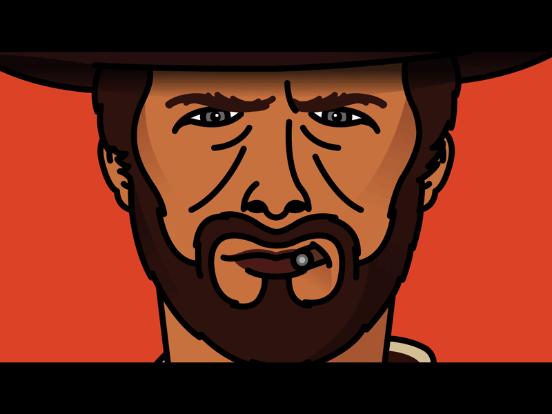
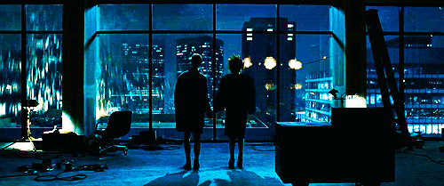
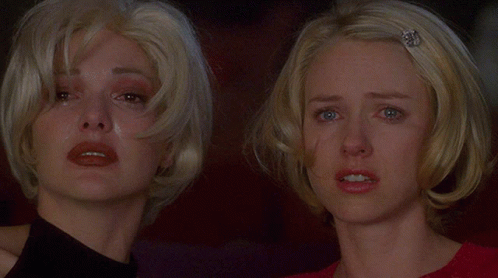
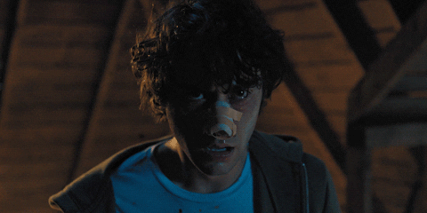
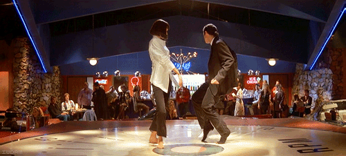
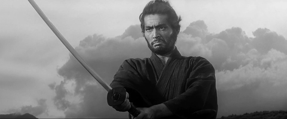

- Paco Plaza
- Jaume Balagueró
| Rang | Film | Réalisateur | Année de sortie | Meilleur scène |
|---|---|---|---|---|
| 1 | Le bon la brute et le truand | Sergio Leone | 1966 |  |
| 2 | Mad mad : Fury road | George Miller | 2015 | |
| 3 | Fight club | David Fincher | 1999 |  |
| 4 | Mulholland Drive | David Lynch | 2001 |  |
| 5 | Hérédité | Ari Aster | 2018 |  |
| 6 | Douze hommes en colère | Sidney Lumet | 1957 | |
| 7 | Pulp fiction | Quentin Tarantino | 1994 |  |
| 8 | Le Seigneur des Anneaux : Les deux tours | Peter Jackson | 2002 | |
| 9 | Rec |
|
2008 | |
| 10 | Harakiri | Masaki Kobayashi | 1962 |  |
| Remonter en haut du classement | ||||